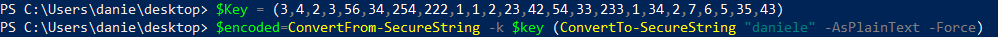
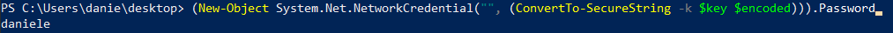
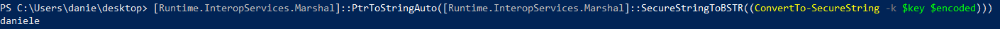

SecureString
SecureStringPowerShell introduced SecureString, in an attempt to make
working with passwords slightly less risky.
Attackers instead use
SecureString
not to hide their credentials in, but to hide their malicious code/data in.
The limitation with this approach
is a
65,536 character limit on the original text to encode.
AES
keys need to be exactly 128, 192 or 256 bits long
AES key can be represented as an array of decimal number,
with each of them less than 256 to fit within a single unsigned byte(8bits).
◇ 256 bits → 256/8=32
numbers
◇ 192 bits → 192/8=24 numbers
◇ 128 bits → 128/8=16 numbers
encrypt
PS> $Key = (3,4,2,3,56,34,254,222,1,1,2,23,42,54,33,233,1,34,2,7,6,5,35,43) #192bits AES key,24 numbers
PS> $encoded=ConvertFrom-SecureString -k $key (ConvertTo-SecureString "daniele" -AsPlainText -Force)
decrypt
PS> (New-Object System.Net.NetworkCredential("", (ConvertTo-SecureString -k $key $encoded))).Password
PS> [Runtime.InteropServices.Marshal]::PtrToStringAuto([Runtime.InteropServices.Marshal]::SecureStringToBSTR((ConvertTo-SecureString -k $key $encoded))) #alternative
 Bibliography:
•
https://www.wietzebeukema.nl/blog/powershell-obfuscation-using-securestring